Automated deployments with Wercker
In this tutorial we will set up a basic Hugo project and then configure a free tool called Wercker to automatically deploy the generated site any time we add an article. We will deploy it to GitHub pages as that is easiest to set up, but you will see that we can use anything. This tutorial takes you through every step of the process, complete with screenshots, and is fairly long.
The assumptions made for this tutorial are that you know how to use git for version control, and have a GitHub account. In case you are unfamiliar with these, in their help section GitHub has an explanation of how to install and use git and you can easily sign up for a free GitHub account as well.
Creating a basic Hugo site
There are already pages dedicated to describing how to set up a Hugo site so we will only go through the most basic steps required to get a site up and running before we dive into the Wercker configuration. All the work for setting up the project is done using the command line, and kept as simple as possible.
Create the new site using the hugo new site command, and we move into it.
hugo new site hugo-wercker-example
cd hugo-wercker-example
Add the herring-cove theme by cloning it into the theme directory using the following commands.
mkdir themes
cd themes
git clone https://github.com/spf13/herring-cove.git
Cloning the project like this will conflict with our own version control, so we remove the external git configuration.
rm -rf herring-cove/.git
Let’s add a quick about page.
hugo new about.md
Now we’ll edit contents/about.md to ensure it’s no longer a draft and add some text to it. Once completed it’s a good idea to do a quick check if everything is working by running
hugo server --theme=herring-cove
If everything is fine, you should be able to see something similar to the image below when you go to localhost:1313 in your browser.
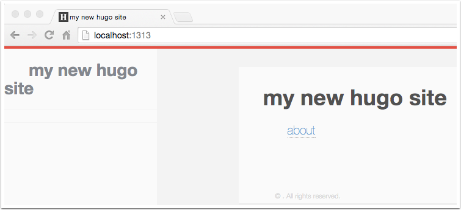
Setting up version control
Adding git to our project is done by running the git init command from the root directory of the project.
git init
Running git status at this point will show you p entries: the config.toml file, the themes directory, the contents directory, and the public directory. We don’t want the public directory version controlled however, as we will use wercker to generate that later on. Therefore, we’ll add a gitignore file that will exclude this using the following command.
echo "/public" >> .gitignore
As we currently have no static files outside of the theme directory, Wercker might complain when we try to build the site later on. To prevent this, we simply have to add any file to the static folder. To keep it simple for now we’ll add a robots.txt file that will give all search engines full access to the site when it’s up.
echo "User-agent: *\nDisallow:" > static/robots.txt
After this we can add everything to the repository.
git add .
git commit -m "Initial commit"
Adding the project to GitHub
First we’ll create a new repository. You can do this by clicking on the + sign at the top right, or by going to https://github.com/new
We then choose a name for the project (hugo-wercker-example). When clicking on create repository GitHub displays the commands for adding an existing project to the site. The commands shown below are the ones used for this site, if you’re following along you will need to use the ones shown by GitHub. Once we’ve run those commands the project is in GitHub and we can move on to setting up the Wercker configuration.
git remote add origin [email protected]:ArjenSchwarz/hugo-wercker-example.git
git push -u origin master
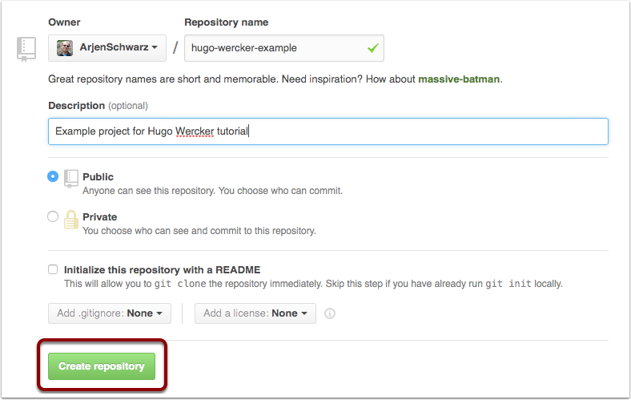
Welcome to wercker
Let’s start by setting up an account for Wercker. To do so we’ll go to http://wercker.com and click on the register link at the top-right corner.
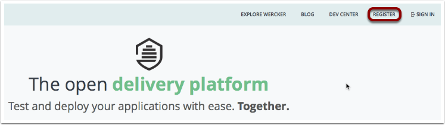
Register
To make life easier for ourselves, we will then register using GitHub. If you don’t have a GitHub account, or don’t want to use it for your account, you can of course register with a username and password as well.
Connect GitHub/Bitbucket
After you are registered, you will need to link your GitHub and/or Bitbucket account to Wercker. You do this by going to your profile settings, and then “Git connections” If you registered using GitHub it will most likely look like the below. To connect a missing service, simply click on the connect button which will then send you to either GitHub or Bitbucket where you might need to log in and approve their access to your account.
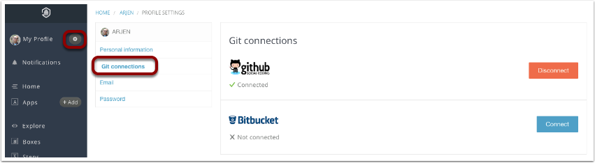
Add your project
Now that we’ve got all the preliminaries out of the way, it’s time to set up our application. For this we click on the + Add button next to Apps, and then we’ll choose to use GitHub as our provider.
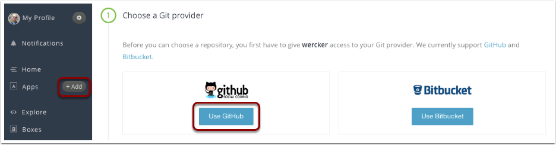
Select a repository
Clicking this will make Wercker show you all the repositories you have on GitHub, but you can easily filter them as well. So we search for our repository, select it, and then click on “Use selected repo”.
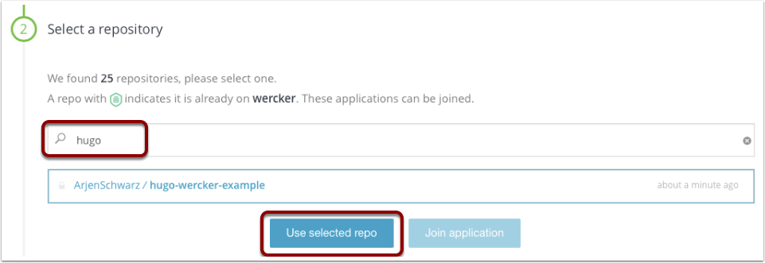
Configure access
This step can be slightly tricky. As Wercker doesn’t access to check out your private projects by default it will ask you what you want to do. When your project is public, as needs to be the case if you wish to use GitHub Pages, the top choice is recommended. When you use this it will simply check out the code in the same way anybody visiting the project on GitHub can do.
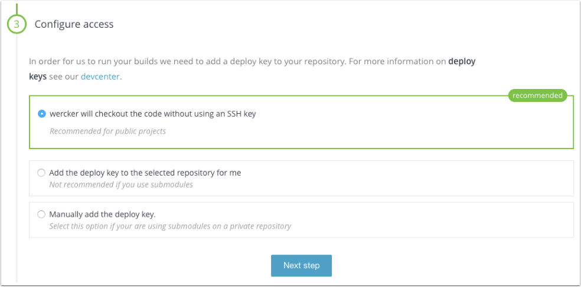
Wercker.yml
Wercker will now attempt to create an initial wercker.yml file for you. Or rather, it will create the code you can copy into it yourself. Because there is nothing special about our project according to Wercker, we will simply get the wercker/default box. So what we do now is create a wercker.yml file in the root of our project that contains the provided configuration, and after we finish setting up the app we will expand this file to make it actually do something.
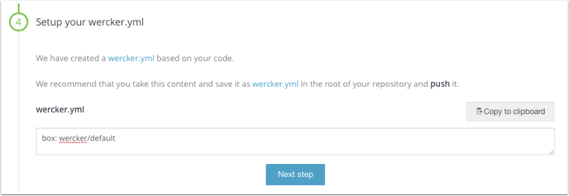
Public or not
This is a personal choice, you can make an app public so that everyone can see more details about it. This doesn’t give you any real benefits either way in general, although as part of the tutorial I have of course made this app public so you can see it in action yourself.
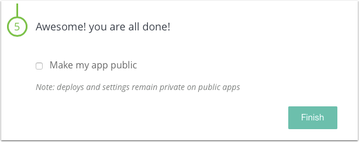
And we’ve got an app
The application is added now, and Wercker will be offering you the chance to trigger a build. As we haven’t pushed up the wercker.yml file however, we will politely decline this option.
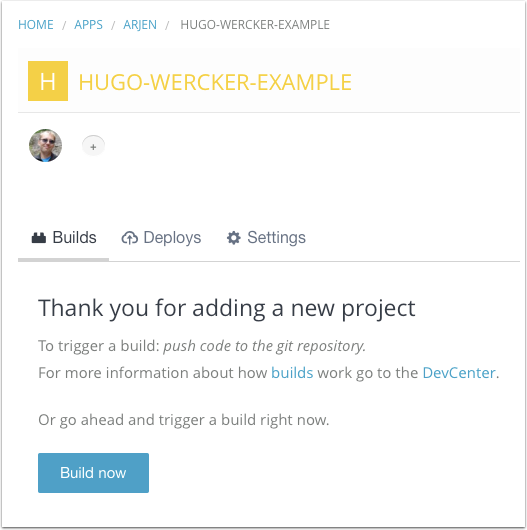
Adding steps
And now we’re going to add the steps themselves. First, we go to the “Steps” action in the sidebar and then search for hugo. The first result is the Hugo-Build task, which we select.
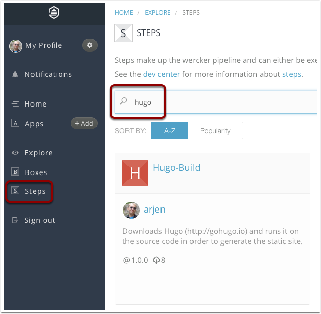
Using Hugo-Build
Inside the details of this step you will see how to use it. At the top is a summary for the very basic usage, but when scrolling down you go through the README of the step which will usually contain more details about how to use it including a full example of using the step. So we return to our project, and while making it fit our project better we add these details to our wercker.yml file so it looks like this. Wercker also has a page for validating wercker.yml files, and it’s usually a good idea to do so before committing changes.
box: wercker/default
build:
steps:
- arjen/hugo-build:
version: 0.12
theme: herring-cove
flags: --buildDrafts=true
This concludes the first step, so we’ll test that it all works as it should by pushing up our wercker.yml file and seeing the magic at work.
git add wercker.yml
git commit -m "Add wercker.yml"
git push origin master
Once completed a nice tick should have appeared in front of your first build, and if you want you can look at the details by clicking on it. However, we’re not done yet as we still need to deploy it to GitHub Pages.
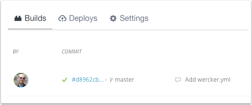
Adding a GitHub Pages step
In order to deploy to GitHub Pages we need to add a deploy step. Once again searching through the Steps repository we find that the most popular step is the lukevevier/gh-pages step so we add the configuration for that to our wercker.yml file, which then becomes this:
box: wercker/default
build:
steps:
- arjen/hugo-build:
version: 0.12
theme: herring-cove
flags: --buildDrafts=true
deploy:
steps:
- lukevivier/[email protected]:
token: $GIT_TOKEN
domain: hugo-wercker.ig.nore.me
basedir: public
How does this configuration work? We’ve selected a couple of things, first the domain we want to use for the site. Configuring this here will ensure that GitHub Pages is aware of the domain you want to use.
Secondly we’ve configured the basedir to public, this is the directory that will be used as the website on GitHub Pages.
And lastly, you can see here that this has a $GIT_TOKEN variable. This is used for pushing our changes up to GitHub and we will need to configure this before we can do that. We do this by going to our app’s settings and clicking on Deploy targets. Now, we Add deploy target and select Custom deploy.
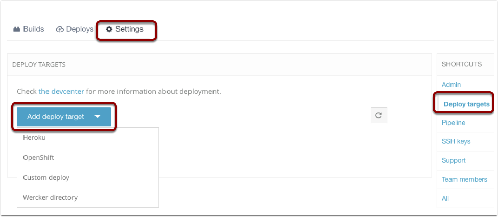
Configure the deploy step
Simply fill in the name, and make sure you enable auto deploy from the master branch. Next you add a variable for the GIT_TOKEN, for this you’ll need to create an access token in GitHub. How to do that is described on a GitHub help page. With the deploy step configured in Wercker, we can push the updated wercker.yml file to GitHub and it will create the GitHub pages site for us. The example site we used here is accessible under hugo-wercker.ig.nore.me
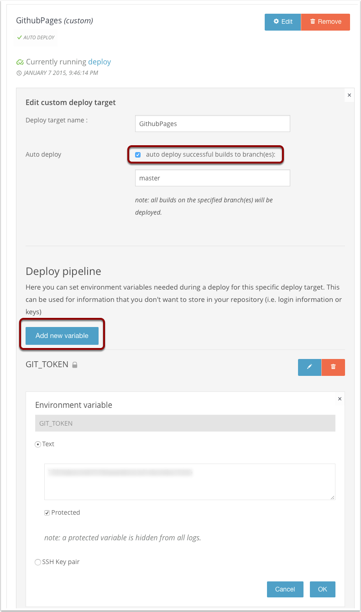
Conclusion
From now on, any time you want to put a new post on your blog all you need to do is push your new page to GitHub and the rest will happen automatically. The source code for the example site used here is available on GitHub, as is the Hugo Build step itself.
If you want to see an example of how you can deploy to S3 instead of GitHub pages, take a look at Wercker’s blogpost about how to set that up for Middleman.